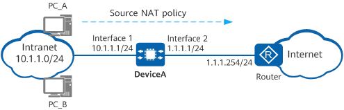

Example for Configuring NAT No-PAT for Intranet Users to Access the Internet
Networking Requirements
DeviceA is deployed at the border of an enterprise network. A source NAT policy needs to be configured on DeviceA so that intranet users on the 10.1.1.0/24 network segment can access the Internet. As only a small number of users require access to the Internet, NAT No-PAT can be configured on DeviceA to perform one-to-one translation between private and public addresses. The enterprise has obtained six public IP addresses (1.1.1.10 to 1.1.1.15) from the Internet service provider (ISP) for address translation. Figure 1 shows the network diagram, in which the router is the access gateway provided by the ISP.

In this example, interfaces 1 and 2 represent 10GE 0/0/1 and 10GE 0/0/2, respectively.

Item |
Data |
Description |
|
|---|---|---|---|
10GE0/0/1 |
IP address: 10.1.1.1/24 |
Set the default gateway address on each intranet host to 10.1.1.1. |
|
10GE0/0/2 |
IP address: 1.1.1.1/24 |
1.1.1.1/24 is a public address provided by the ISP. |
|
Private network segment allowed to access the Internet |
10.1.1.0/24 |
- |
|
Post-NAT public addresses |
1.1.1.10 to 1.1.1.15 |
Configure NAT No-PAT on DeviceA as a small number of users require access to the Internet. |
|
Route |
Default route on DeviceA |
Destination address: 0.0.0.0 Next-hop address: 1.1.1.254 |
Configure a default route to the Internet on DeviceA, enabling it to forward traffic from the intranet to the ISP router. |
Configuration Roadmap
- Configure IP addresses for interfaces and set basic network parameters.
- Configure a NAT address pool, with port translation disabled.
- Configure a source NAT policy to enable source address translation for intranet users on a specified network segment to access the Internet.
- Configure a default route on DeviceA, enabling it to forward traffic sent from intranet users to the ISP router.
- Configure the default gateway address on each intranet host, enabling them to send traffic destined for the Internet to DeviceA.
Procedure
- Configure IP addresses for interfaces and set basic network parameters.
# Configure an IP address for 10GE 0/0/1.
<HUAWEI> system-view [HUAWEI] sysname DeviceA [DeviceA] interface 10ge 0/0/1 [DeviceA-10GE0/0/1] ip address 10.1.1.1 24 [DeviceA-10GE0/0/1] quit
# Configure an IP address for 10GE 0/0/2 and enable the NAT function.
[DeviceA] interface 10ge 0/0/2 [DeviceA-10GE0/0/2] ip address 1.1.1.1 24 [DeviceA-10GE0/0/2] nat enable [DeviceA-10GE0/0/2] quit
- Configure a NAT address pool, with port translation disabled.
[DeviceA] nat address-group addressgroup1 [DeviceA-address-group-addressgroup1] mode no-pat global [DeviceA-address-group-addressgroup1] section 0 1.1.1.10 1.1.1.15 [DeviceA-address-group-addressgroup1] route enable [DeviceA-address-group-addressgroup1] quit
- Configure a source NAT policy to enable source address translation for intranet users on a specified network segment to access the Internet.
[DeviceA] nat-policy [DeviceA-policy-nat] rule name policy_nat1 [DeviceA-policy-nat-rule-policy_nat1] source-address 10.1.1.0 24 [DeviceA-policy-nat-rule-policy_nat1] action source-nat address-group addressgroup1 [DeviceA-policy-nat-rule-policy_nat1] quit [DeviceA-policy-nat] quit
- Configure a default route on DeviceA, enabling it to forward traffic sent from intranet users to the ISP router.
[DeviceA] ip route-static 0.0.0.0 0.0.0.0 1.1.1.254 - Configure the default gateway address on each intranet host, enabling them to send traffic destined for the Internet to DeviceA. The detailed configuration process is not provided here.
- If the addresses in the NAT address pool and the IP address of 10GE 0/0/2 are on different network segments, configure a static route to the addresses in the NAT address pool on the ISP router, with the next-hop address set to 1.1.1.1. The ISP router can then forward traffic returned by the Internet to DeviceA.
The post-NAT public addresses are not assigned to any interfaces. As a result, the ISP router is unable to use a routing protocol to discover routes to these public addresses. Therefore, contact the ISP network administrator to configure a static route to the addresses in the address pool on the ISP router.
Verifying the Configuration
- Verify that intranet PCs can access the Internet.
- Run the display nat-policy rule name rule-name command on DeviceA to check the number of times traffic matches the source NAT policy.
- Check for the session entries with the source addresses being the private addresses of intranet PCs. If such an entry is found and the post-NAT IP address is an IP address in the NAT address pool, the NAT policy has been configured successfully.
<DeviceA> display session all verbose Session Table Information: Protocol : 6(TCP) SrcAddr Port Vpn : 10.1.1.3 2474 DestAddr Port Vpn : 3.3.3.3 80 Time To Live : 60s NAT Info New SrcAddr : 1.1.1.10 New SrcPort : - New DestAddr : - New DestPort : - Total : 1
Configuration Scripts
# sysname DeviceA # interface 10GE0/0/1 ip address 10.1.1.1 255.255.255.0 # interface 10GE0/0/2 ip address 1.1.1.1 255.255.255.0 nat enable # ip route-static 0.0.0.0 0.0.0.0 1.1.1.254 # nat address-group addressgroup1 0 mode no-pat global route enable section 0 1.1.1.10 1.1.1.15 # nat-policy rule name policy_nat1 source-address 10.1.1.0 24 action source-nat address-group addressgroup1 # return